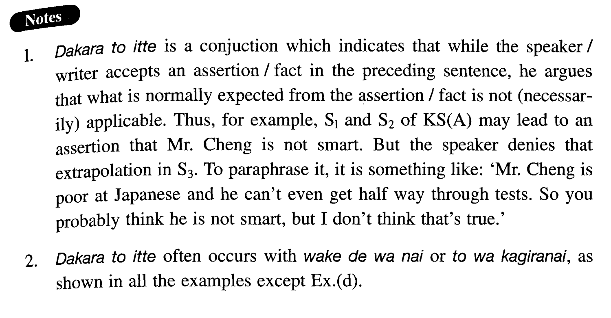

←
DoJG
→
だからと言って
(I. 21)
Example sentences
(ksa).
チェンさんは日本語が苦手だ。テストではいつも半分も出来ない。
だからと言って
、頭が悪いわけではない。
Mr. Cheng is not good at Japanese. On a test he cannot even finish half of it. But it doesn't follow from this that he is not smart.
(ksb).
吉田さんは日本人だ。しかも、小説家だ。
だからと言って
、日本語が教えられるとは限らない。
Ms. Yoshida is Japanese. And she is a novelist. But she may not be able to teach Japanese.
(a).
ジョンは奥さんのことをちっとも褒めない。時々口をきかないこともある。
だからと言って
、奥さんを愛していないわけではない。
John does not praise his wife at all. Sometimes he doesn't talk with her. But it doesn't mean that he doesn't love her.
(b).
僕は毎日運動をしている。食べ物にも注意している。しかし、
だからと言って
、長生きする保証はない。
I am doing exercise every day. I am also paying attention to what I eat. But it doesn't guarantee that I will live long.
(c).
日本人は集団行動が好きだと言われる。何をするにも一緒にやる。しかし、
だからと言って
、個人行動が全くないわけではない。
They say that Japanese like group activities. Whatever they do, they do together. But it is not the case that there are no individual activities.
(d).
魚は健康にいい。しかし、
だからと言って
、魚ばかり食べていたら、体に悪いはずだ。
Fish is good for you. But if you ate nothing but fish, it would be bad for you.
(e).
日本語はよく難しい言語だと言われる。文法が複雑だし、漢字を覚えるのも大変だ。
だからと言って
、外国人が学べないわけではない。
Japanese is often said to be difficult. The grammar is complex and kanji are hard to memorize. But that doesn't mean foreigners cannot learn it.
Formation
S1
(S2…)
だからと言って
Sn
Where Sn often ends with わけではない or とは限らない
彼は若い。経験も浅い。
だからと言って
教えられない
{わけではない/とは限らない}。
He is young. He has little experience. But it doesn’t follow from this that he cannot teach
